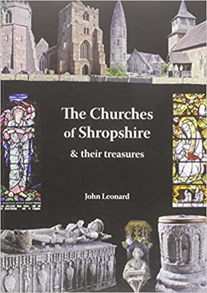
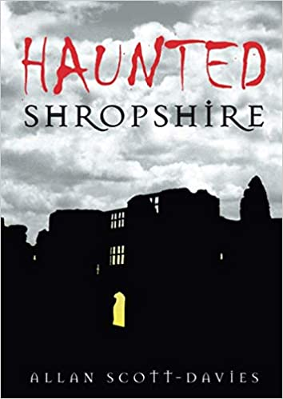

The following books have provided a useful source of reference:
 |
||
 |
||
The following eBooks have provided a useful source of reference:
The following web sites have provided a useful source of reference:
Discovering Shropshire's History
The following Wikipedia pages have provided a useful source of reference: